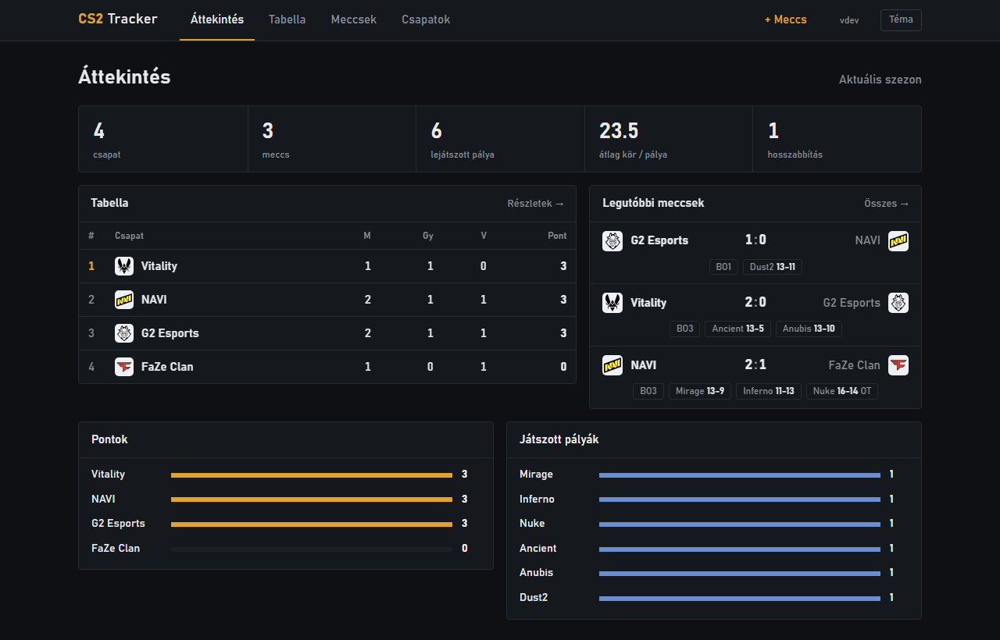
| Készítette | NWXGKT |
| Forráskód (Git repository) | github.com/pumca/cs2-esports-tracker |
| DevOps sandbox | GitHub Actions + GitHub Container Registry |
| Igazolt pipeline-futás | actions/runs/45488994014 – Success |
| Dátum | 2026. november |
A feladat egy egyszerű üzleti funkcionalitású mini alkalmazás, valamint egy teljes körű CI/CD folyamat elkészítése volt egy szabadon választott DevOps sandbox környezetben, verziókezelő (Git) használatával. A forráskód feltöltésének (git push) hatására a pipeline-nak automatikusan buildelnie, tesztelnie és telepítenie kell az alkalmazást.
A megoldás egy CS2 (Counter-Strike 2) esport tornakövető webalkalmazás. Csapatokat és meccseket (BO1/BO3/BO5) lehet benne rögzíteni, a pályaeredményeket a játék szabályai szerint ellenőrzi, és automatikusan számolja a tabellát. A forráskód a GitHubon van, a pipeline a GitHub Actions sandboxban fut, a telepíthető artifact egy Docker image, amely a GitHub Container Registry-be (GHCR) kerül.
src/rules.js, src/store.js)ceil(BO/2) megnyert pálya kell. A már eldőlt sorozat utáni pálya és a hiányzó pálya hibát ad.| Végpont | Leírás |
|---|---|
GET / | Webes felület (single page application) |
GET /health | Állapot és a futó verzió (commit SHA) – a deploy ellenőrzi |
GET / POST /api/teams | Csapatok listázása / felvétele |
PATCH / DELETE /api/teams/:id | Csapat logójának, címerének módosítása / csapat törlése |
GET / POST /api/matches, DELETE /api/matches/:id | Meccsek listázása / rögzítése / törlése |
GET /api/standings | Tabella |
GET /api/stats | Statisztikák az áttekintő oldalhoz |
GET /api/logos, GET /api/emblems | Elérhető logók, címerformák és jelképek |
Hibás kérésre (érvénytelen eredmény, hibás JSON, ismeretlen végpont) az API minden esetben JSON hibaüzenetet ad (400 / 404). Az adattárolás szándékosan memóriabeli: a feladat hangsúlya az üzemeltetési és automatizálási folyamaton van.
| Terület | Eszköz |
|---|---|
| Alkalmazás | Node.js 22 LTS, Express 4; felület: HTML + CSS + JavaScript (külső függőség nélkül) |
| Verziókezelés | Git, GitHub (main ág) |
| CI/CD sandbox | GitHub Actions (ubuntu-latest runner) |
| Artifact | Docker image (multi-stage, node:22-alpine alap) |
| Artifact tároló | GitHub Container Registry – ghcr.io/pumca/cs2-esports-tracker |
| Tesztelés | Node beépített tesztfuttatója (node --test), 17 teszt; smoke teszt curl-lel |
fejlesztő ──git push──► GitHub repository (main)
│ (automatikus trigger)
▼
GitHub Actions – CI/CD workflow
┌────────────────┐ ┌──────────────────────────┐ ┌───────────────────────────────┐
│ 1. Build és │──►│ 2. Docker image build és │──►│ 3. Deploy a sandboxba és │
│ teszt │ │ publikálás (GHCR) │ │ smoke teszt │
│ npm ci, lint, │ │ :latest és :<commit SHA> │ │ docker pull → docker run → │
│ 17 teszt │ │ │ │ /health, API, felület ellenőrz│
└────────────────┘ └──────────────────────────┘ └───────────────────────────────┘
cs2-esports-tracker/ ├── .github/workflows/ci-cd.yml CI/CD pipeline definíció ├── Dockerfile konténer (multi-stage) ├── docker-compose.yml helyi futtatás Dockerrel ├── .dockerignore, .gitignore ├── package.json, package-lock.json ├── start.bat egykattintásos indítás Windowson ├── src/ │ ├── server.js belépési pont (port: PORT, alapért. 3000) │ ├── app.js Express alkalmazás, REST API, hibakezelés │ ├── store.js adattár, tabella- és statisztikaszámítás, demóadat │ ├── rules.js CS2 szabályok (pályaeredmény, sorozat) │ └── emblems.js logó- és címervalidáció ├── public/ webes felület (index.html, app.js, style.css, logos/) ├── test/ rules.test.js, api.test.js └── docs/ dokumentáció és képernyőképek
main.node_modules nem kerül a repóba (.gitignore); a függőségeket a package-lock.json rögzíti, így a build reprodukálható (npm ci).main ágra csak ellenőrzött kód kerül ki.A pipeline definíciója: .github/workflows/ci-cd.yml. Indul minden main ágra történő pushnál, pull requestnél és kézzel is (workflow_dispatch). Három, egymásra épülő job-ból áll; ha egy lépés hibázik, a következő nem fut le.
actions/checkout@v7), Node.js 22 telepítése npm gyorsítótárral (actions/setup-node@v7).npm ci – függőségek telepítése pontosan a lock fájl szerint.npm run lint – szintaxis-ellenőrzés.npm test – 17 unit és API teszt. Hiba esetén nem készül image.GITHUB_TOKEN-nel (nincs külön titok).APP_VERSION build-argumentumon keresztül bekerül az image-be.latest és a commit SHA (visszakereshető, melyik commitból készült).:<commit SHA>), és konténerként elindítja./health végpont válaszol (legfeljebb 40 mp; ha nem indul el, kiírja a konténer naplóját és hibával leáll)./health állapota „ok” és a verzió megegyezik a commit SHA-val; a tabella tartalmazza a demócsapatokat; új csapat felvehető (POST); a webes felület kiszolgálódik.Sikeres deploy: ghcr.io/pumca/cs2-esports-tracker:<SHA>. deploy:
needs: docker
steps:
- uses: docker/login-action@v4 # bejelentkezés a GHCR-be
- run: |
docker pull "$IMAGE_LC:${{ github.sha }}"
docker run -d --name tracker -p 3000:3000 "$IMAGE_LC:${{ github.sha }}"
- run: | # smoke teszt
curl -fsS http://localhost:3000/health | grep '"status":"ok"'
curl -fsS http://localhost:3000/health | grep "${{ github.sha }}"
curl -fsS http://localhost:3000/api/standings | grep 'NAVI'
curl -fsS -X POST http://localhost:3000/api/teams ... | grep 'Smoke Team'
curl -fsS http://localhost:3000/ | grep 'CS2'
npm ci --omit=dev), a végső image csak a szükséges fájlokat tartalmazza (kis méret).USER node).HEALTHCHECK a /health végpontra.APP_VERSION környezeti változó a commit SHA, ezt adja vissza a /health.| Tesztfájl | Mit ellenőriz |
|---|---|
test/rules.test.js (7) | Érvényes és érvénytelen pályaeredmények (rendes játékidő, hosszabbítás), BO3 kiértékelés, felesleges és hiányzó pálya, érvénytelen BO-érték |
test/api.test.js (10) | /health; csapatfelvétel és duplikáció tiltása; meccsrögzítés és tabella; érvénytelen meccs elutasítása; logó és címer validálása; hibás JSON és ismeretlen végpont; statisztikák; törlés; tabella-sorrend |
| Smoke teszt (pipeline) | A telepített konténeren: állapot, verzió, tabella, csapatfelvétel, felület |
A teszteket a pipeline minden futáskor lefuttatja; helyben az npm test paranccsal indíthatók (eredmény: 17/17 sikeres).
ghcr.io/pumca/cs2-esports-tracker:<commit SHA> Docker image, amelyet a pipeline épít és publikál./health „ok” állapotot és a commit SHA-val egyező verziót ad – vagyis pontosan az új artifact fut.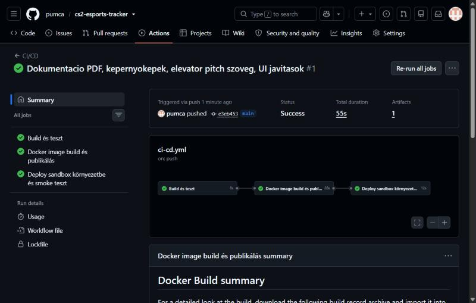
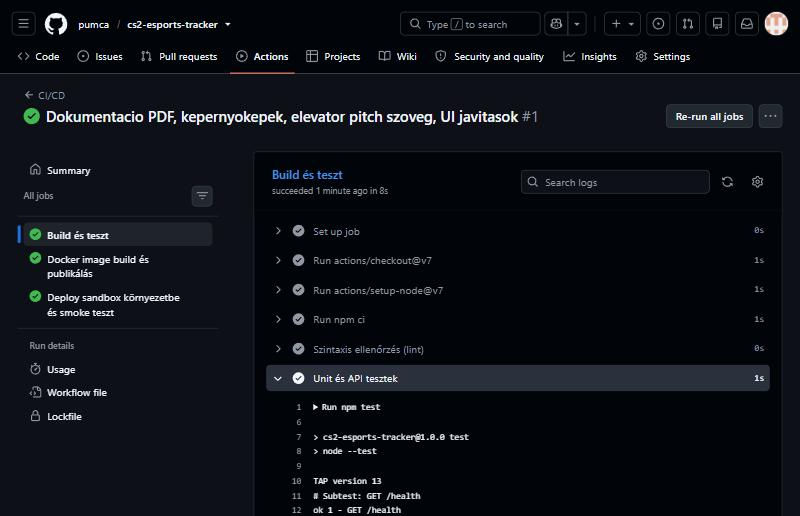
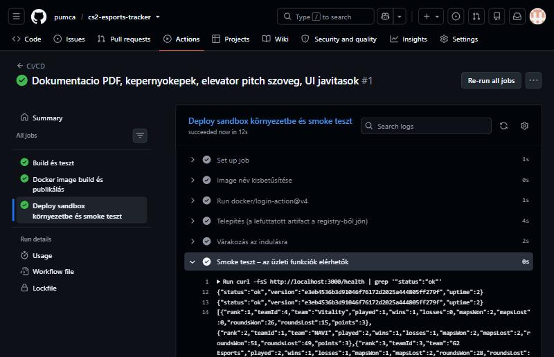
/health a commit SHA-t adja vissza, a tabella a csapatokatgit add . git commit -m "változás leírása" git push # a pipeline automatikusan elindul: build → teszt → image → deploy → smoke teszt
start.bat # Windows: telepít, elindít, megnyitja a böngészőt npm install && npm start # http://localhost:3000 npm test # tesztek docker compose up --build # Dockerrel docker run -p 3000:3000 ghcr.io/pumca/cs2-esports-tracker:latest # a publikált image
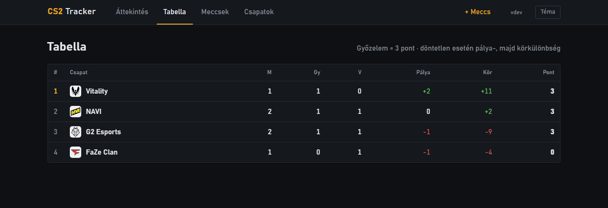
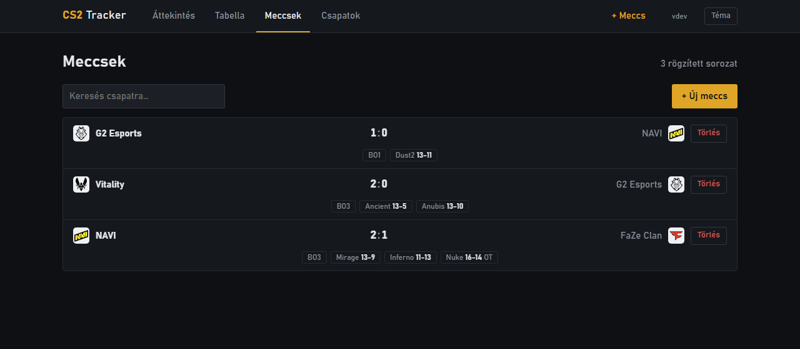
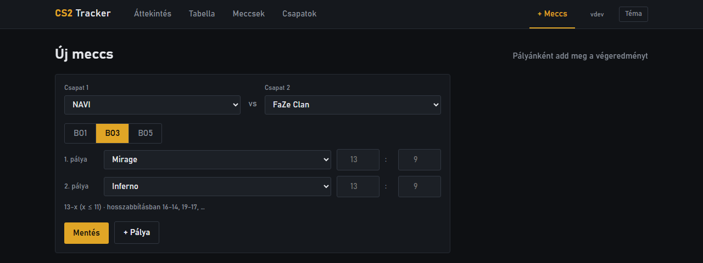
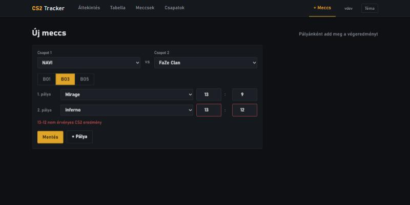
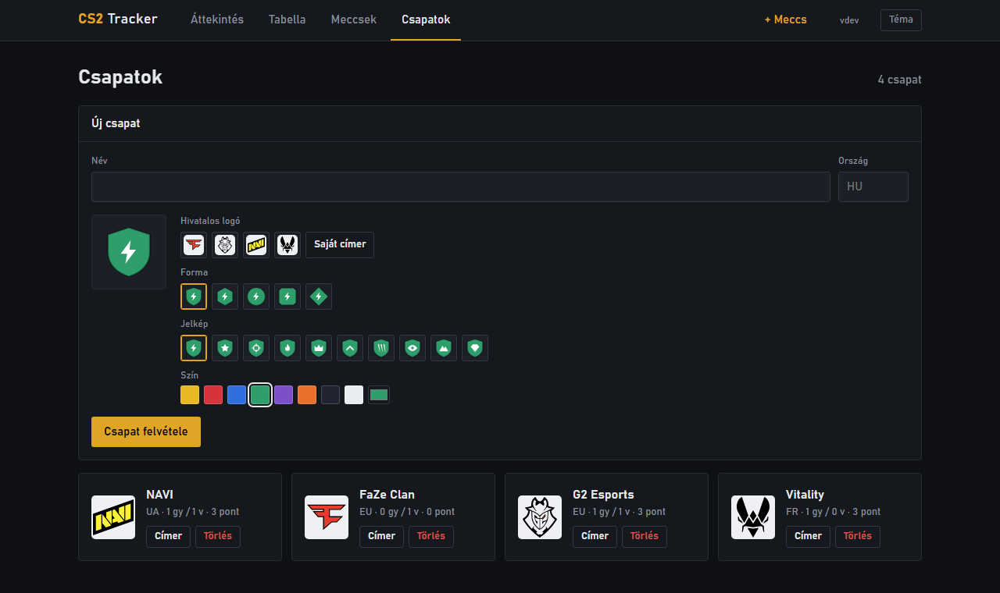
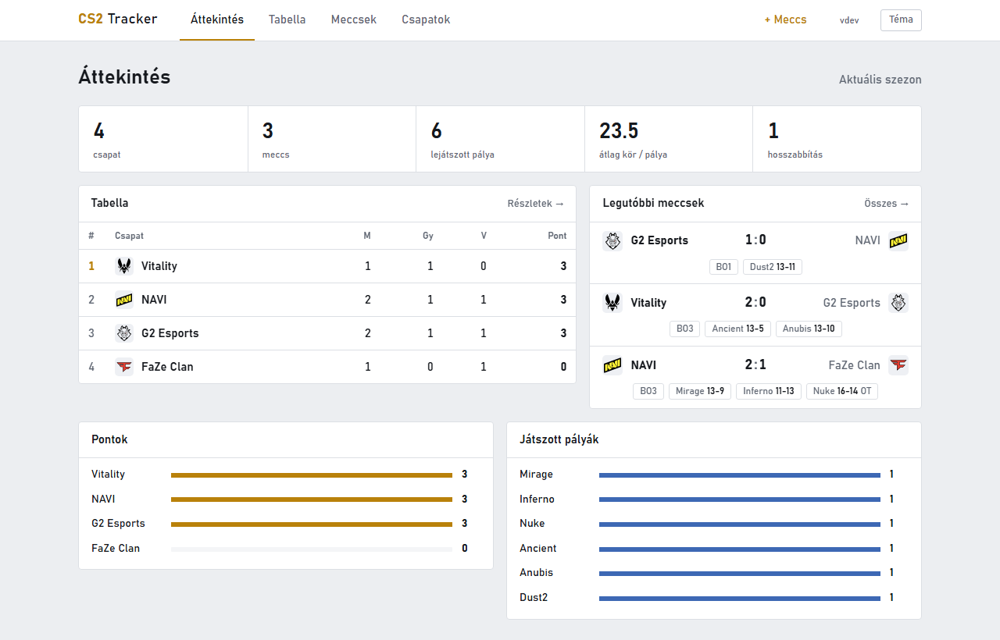
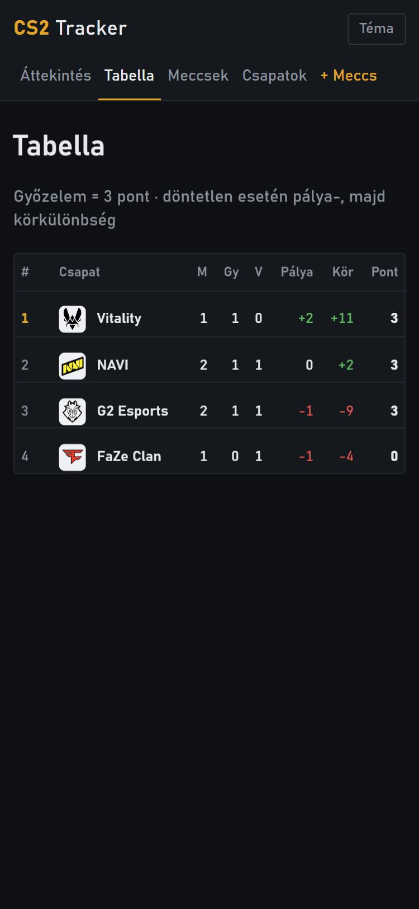
A csapatlogók (NAVI, FaZe Clan, G2 Esports, Team Vitality) az érintett szervezetek védjegyei; forrásuk a Wikimedia Commons / Wikipedia, a projektben kizárólag oktatási céllal szerepelnek.